<!--##############################################################################################################
DO:
./start_remote.sh (im Presentationsordner)

oder

╔[/var/www/html/beispielpresi/master]
╚>$ node plugin/multiplex


https://github.com/D0gi/reveal.js
##################################################################################################################
-->


<!doctype html>
<html lang="en">

<head>
	<meta charset="utf-8">

	<title>PI</title>

	<meta name="description" content="A framework for easily creating beautiful presentations using HTML">
	<meta name="author" content="Hakim El Hattab">

	<meta name="apple-mobile-web-app-capable" content="yes" />
	<meta name="apple-mobile-web-app-status-bar-style" content="black-translucent" />

	<meta name="viewport" content="width=device-width, initial-scale=1.0, maximum-scale=1.0, user-scalable=no, minimal-ui">

	<link rel="stylesheet" href="css/reveal.css">
	<link rel="stylesheet" href="css/theme/red_dark.css" id="theme">
	<link rel="stylesheet" href="lib/font/font-awesome/css/font-awesome.min.css" />

	<!-- Code syntax highlighting -->
	<link rel="stylesheet" href="lib/css/zenburn.css">

	<!-- individual stylesheet -->
	<link href="css/style.css" rel="stylesheet" />

	<!-- Printing and PDF exports -->
	<script>
	var link = document.createElement( 'link' );
	link.rel = 'stylesheet';
	link.type = 'text/css';
	link.href = window.location.search.match( /print-pdf/gi ) ? 'css/print/pdf.css' : 'css/print/paper.css';
	document.getElementsByTagName( 'head' )[0].appendChild( link );
	</script>

	<!--[if lt IE 9]>
	<script src="lib/js/html5shiv.js"></script>
	<![endif]-->
</head>

<body>

	<div class="reveal">

		<!-- Any section element inside of this container is displayed as a slide -->
		<div class="slides">
			<!-- ############################################################################################################################# -->


			<section data-markdown section data-separator="^\n---\n$" data-separator-vertical="^\n--\n$" data-element-attributes="{_\s*?([^}]+?)}" data-separator-notes="^note:">
				<script type="text/template">
				<br>
				## Automation mit 
				# Raspberry Pi 
				## First steps
				</img>


				note: BLABLABLA

				--

				
				<i class="fa fa-2x fa-list"></i>

				<ul style="list-style-type:none">
				<li><h3>1. Grundlagen</h3></li>
				<li><h3>2. GPIOs</h3></li>
				<li><h3>3. Motoren & H-Brücke</h3></li>
				<li><h3>4. Ultraschall Modul HC-SR04</h3></li>
				<li><h3>5. I²C</h3></li>
				<li><h3>6. Servos</h3></li>
				<li><h3>7. REST & co</h3></li>
				</ul>			
				</script>
			</section>

			

			<section data-markdown section data-separator="^\n---\n$" data-separator-vertical="^\n--\n$" data-element-attributes="{_\s*?([^}]+?)}" data-separator-notes="^note:">
				<script type="text/template">
				<p class="bla">Grundlagen</p>
				
				# Grundlagen
				
				note: $nicht vollständig

				--

				<p class="bla">Grundlagen</p>			
				
				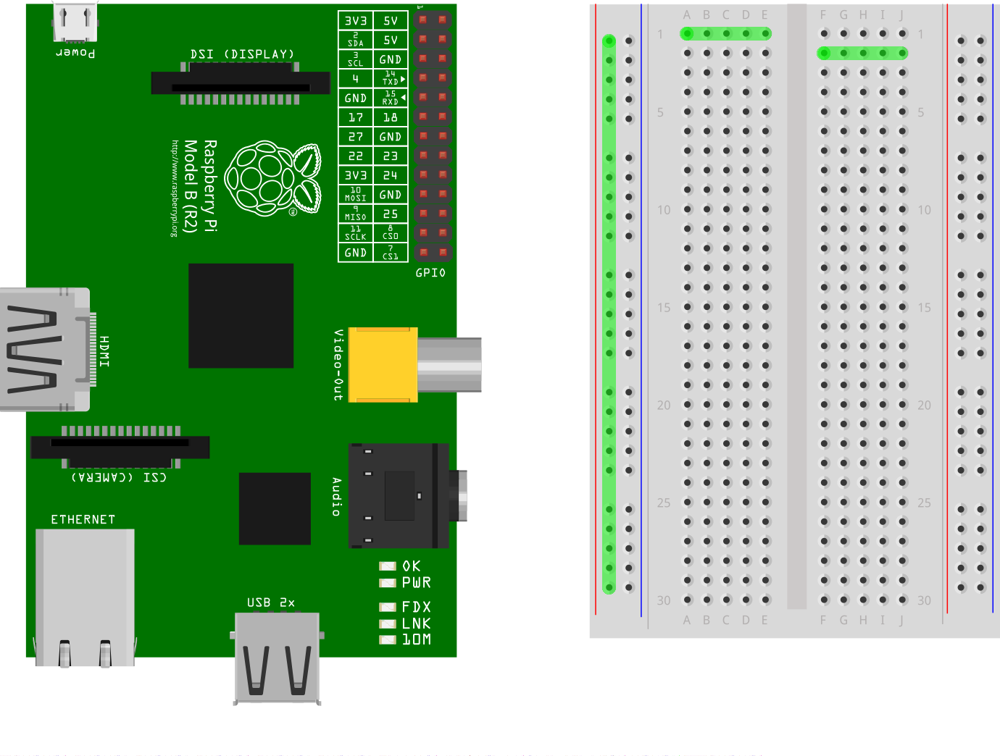</img>

				--

				<p class="bla">Grundlagen</p>			
				
				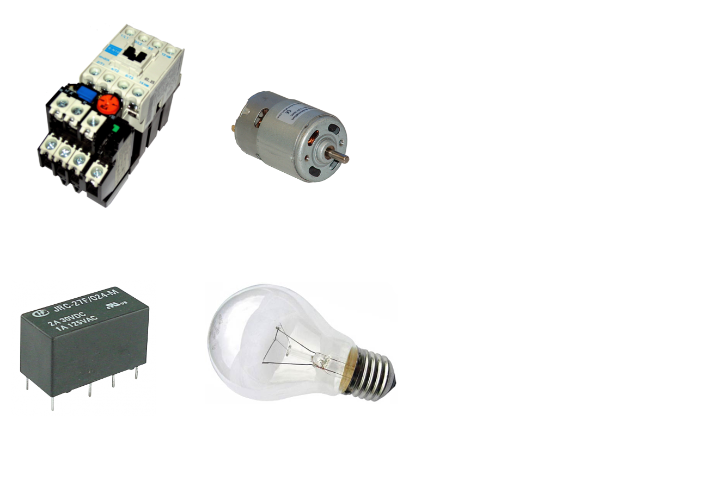</img></p>

				--

				<p class="bla">Grundlagen</p>			
				
				</img>

				--

				<p class="bla">Grundlagen</p>

				- `cd` -Verzeichniswechsel

				- `ls` - Verzeichnisinhalt anzeigen

				- `cp` - Kopieren

				- `rm` - Entfernen

				- `echo` - Ausgebe von Text

				- `cat` - Ausgebe von Dateiinhalten

				- `nano` - Texteditor

				- `sudo` - Kommandos als alternativer Nutzer (root) ausführen

				- `chmod` - Zugriffsrechte ändern

				- `man` - "Bedinungsanleitung" für Programme
			 	
				


								
				</script>
			</section>

			<section data-markdown section data-separator="^\n---\n$" data-separator-vertical="^\n--\n$" data-element-attributes="{_\s*?([^}]+?)}" data-separator-notes="^note:">
				<script type="text/template">
				<p class="bla">GPIOs</p>
				
				# GPIOs		

				note: $nicht vollständig

				--

				<p class="bla">GPIOs</p>

				- GPIO - General Purpose Input Output

				- 26/40 Pins

				- 3,3V Aus- & Eingangsspannung !
					
					< 0,8V ~ LOW

					\> 1,6V ~ HIGH

					\> 3,3V ~ TOT  

				- max. 16mA pro Pin & 50mA insgesamt

				--

				<p class="bla">GPIOs</p>


				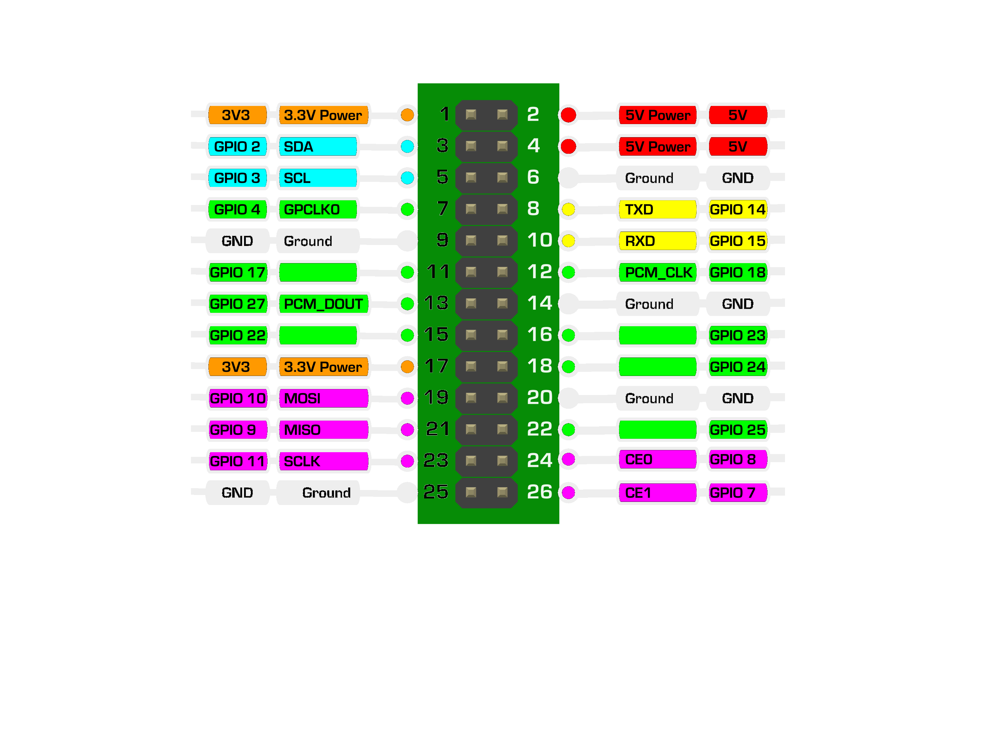</img>

				- I²C, SPI, UART

				note:PWM

				--

				<p class="bla">GPIOs</p>

				GPIOs ansteuern über:

				- sys-Dateisystem

				- Programm `gpio` (wiringPi)

				- Bibliotheken (in C, Python, etc.)

				- ...

				--

				<p class="bla">GPIOs - sys-Dateisystem</p>

				- `ls /sys/class/gpio`

					<pre><code>export  gpiochip0  unexport</code></pre>

				- GPIO aktivieren:

				    - ggf. Zugriffsrechte ändern

						`sudo chmod 666 /sys/class/gpio`

					- GPIO Nr. X exportieren

						`echo "7" >> export `

				- GPIO deaktivieren:
					
					`echo "7" >> unexport `

				--

				<p class="bla">GPIOs - sys-Dateisystem</p>

				- `ls /sys/class/gpio/gpio7 `
				
					<pre><code>active_low  device  direction  edge  power  subsystem  uevent  value</code></pre>

					- direction: `in` / `out`

					- value: `1` / `0`

					- active_low: Eingangssignal invertieren (`1` / `0`)

					- edge: für interrupt (`none`, `rising`, `falling`)


				--

				<p class="bla">GPIOs - Programm `gpio`</p>


				- `gpio -g mode 7 out` (in/pwm/clock/up/down/tri)

				- `gpio -g write 7 0 `

				- `gpio -g read 7`

				- `gpio readall`

				- `man gpio`


				--

				<p class="bla">GPIOs - Bibliotheken</p>


				<pre><code>
					
#include <stdio.h>
#include <stdlib.h>
#include <wiringPi.h>
 
 
#define TRIG 1
#define ECHO 5
#define LED  6
 
void setup() {
        wiringPiSetup();
        pinMode(TRIG, OUTPUT);
        pinMode(LED, OUTPUT);
        pinMode(ECHO, INPUT);
 
        //TRIG pin must start LOW
        digitalWrite(TRIG, LOW);
        delay(30);
}
 
int getCM() {
        //Send trig pulse
        digitalWrite(TRIG, HIGH);
        delayMicroseconds(20);
        digitalWrite(TRIG, LOW);
 
        //Wait for echo start
        while(digitalRead(ECHO) =
        	while(digitalRead(ECHO) == HIGH);
        long travelTime = micros() - startTime;


        int distance = travelTime / 58;
 	
        return distance;
}
 
int main(void) {
        setup();
	int dist;
 	while(TRUE){
        	printf("Distance: %dcm\n", dist=getCM());
		digitalWrite(LED, (dist<=10 ? HIGH:LOW));
		delay(500);
 	}
        return 0;
}
				</code></pre>


				--


				<p class="bla">GPIOs - Bibliotheken</p>

				<pre><code>
import RPi.GPIO as GPIO
import time

# BCM-Bezeichnung der Pins verwenden
GPIO.setmode(GPIO.BCM)

LED = 18                  # GPIO 18 auf Ausgang setzen
GPIO.setup(LED, GPIO.OUT)

# PWM einschalten
pwm = GPIO.PWM(LED, 50); 
pwm.start(0)

try:
  while True:
    # langsam aufdimmen
    for c in range(0, 101, 2):
      pwm.ChangeDutyCycle(c)
      time.sleep(0.1)
    # langsam runterdimmen
    for c in range(100, -1, -2):
      pwm.ChangeDutyCycle(c)
      time.sleep(0.1)

# Abbruch durch Taste Strg-C
except KeyboardInterrupt:
  pwm.stop()
  GPIO.cleanup()
  </code></pre>


				--

				<p class="bla">GPIOs</p>


				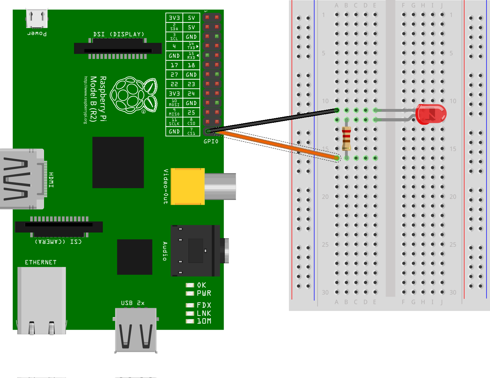</img>


				--

				<p class="bla">GPIOs</p>

				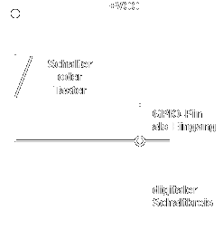</img>

				--

				<p class="bla">GPIOs</p>

				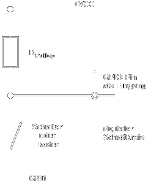</img>
				
				--

				<p class="bla">GPIOs</p>

				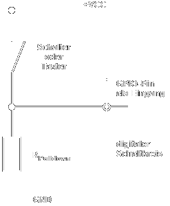</img>
				


				--

				<p class="bla">GPIOs</p>
				
				</img>


								
				</script>
			</section>

			<section data-markdown section data-separator="^\n---\n$" data-separator-vertical="^\n--\n$" data-element-attributes="{_\s*?([^}]+?)}" data-separator-notes="^note:">
				<script type="text/template">
				<p class="bla">Motoren & H-Brücke</p>
				
				# Motoren & H-Brücke


				--

				<p class="bla">Motoren & H-Brücke</p>

				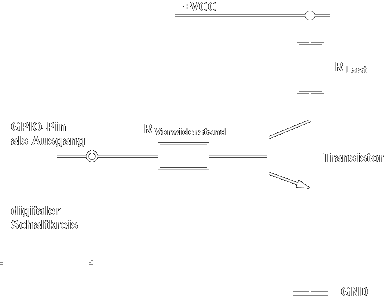</img>


				--

				<p class="bla">Motoren & H-Brücke</p>

				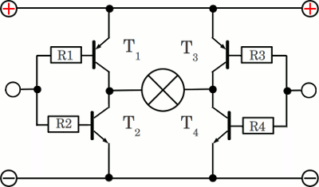</img>
				
				note: Schaltsymbol für Motor ist falsch!!!!

				--

				<p class="bla">Motoren & H-Brücke</p>

				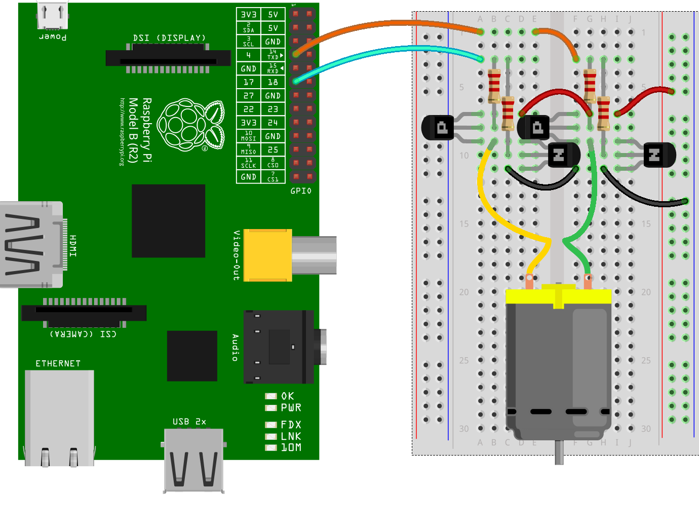</img>

								
				</script>
			</section>

			<section data-markdown section data-separator="^\n---\n$" data-separator-vertical="^\n--\n$" data-element-attributes="{_\s*?([^}]+?)}" data-separator-notes="^note:">
				<script type="text/template">
				<p class="bla">Ultraschall Modul HC-SR04 </p>
				
				# Ultraschall Modul HC-SR04
				
				note: $nicht vollständig

				--

				<p class="bla">Ultraschall Modul HC-SR04 </p>

				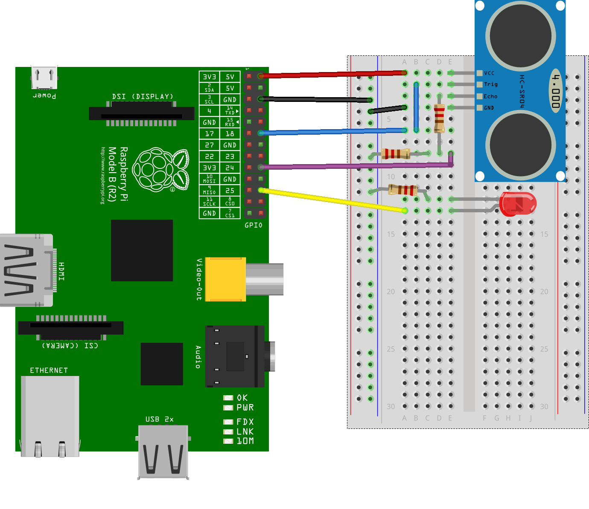</img>

								
				</script>
			</section>


			<section data-markdown section data-separator="^\n---\n$" data-separator-vertical="^\n--\n$" data-element-attributes="{_\s*?([^}]+?)}" data-separator-notes="^note:">
				<script type="text/template">
				<p class="bla">I²C </p>
				
				# I²C 

				--

				<p class="bla">I²C </p>

				</img>

				--

				<p class="bla">I²C </p>

				
				- device/file erzeugen

					`sudo mknod /dev/i2c-0 c 89 0`
				
					`sudo mknod /dev/i2c-1 c 89 1`
				- Nutzer Zugriffsrechte gewähren

					`sudo usermod -aG i2c pi`
				
				- /etc/modprobe.d/raspi-blacklist.conf editieren
				<pre><code>blacklist spi and i2c by default 
				blacklist spi-bcm2708
				blacklist i2c-bcm2708
				</code></pre>

				- zu /etc/modules hinzufügen				
					<pre><code>i2c-dev</code></pre>

				
				
				--

				<p class="bla">I²C </p>

				

				- kernelmodule laden/hinzufügen

					`sudo modprobe i2c-bcm2708`
				
					`sudo modprobe i2c_dev`
				
					`lsmod`

				- ab Kernelversion 3.18: /boot/config.txt editiern
				<pre><code>dtparam=i2c1=on
				dtparam=i2c_arm=on
				</code></pre>

				- `sudo reboot`

				note: $nicht vollständig


				--

				<p class="bla">I²C </p>

				- `i2cdetect -y 0`

				- `i2cset -y 0 0x08 0x15 0x42`

				- `i2cget -y 0 0x27 w`

				--

				<pre><code>#include <unistd.h>
#include <stdio.h>
#include <stdlib.h>
#include <linux/i2c-dev.h>
#include <sys/ioctl.h>
#include <sys/types.h>
#include <sys/stat.h>
#include <fcntl.h>
#include <stdint.h>
#include <string.h>

int wi2c(uint8_t addr, uint16_t reg, uint8_t value)
{
  
  uint8_t res, w[2];
  w[0] = (reg)&0xff;
  w[1] = (reg>>8)&0xff;
  w[2] = value;
  int fd;
  if ((fd = open("/dev/i2c-1", O_RDWR)) < 0) {
    printf("open error! %d\n", fd);
    return -1;
  }
  if (ioctl(fd, I2C_SLAVE, addr) < 0) {
    printf("address error!\n");
    return -1;
  }
  if (write(fd, w, 3) != 3) {
    printf("write error!\n");
    return -1;
  }
  if (read(fd, &res, 1) != 1) {
    printf("read error!\n");
    return -1;
  }
  close(fd);
  printf("-->0x%02x \n", res);
  return 1;
}

int main(int argc, char const *argv[]) {
  if (argc > 1){
   uint8_t addr = strtol(argv[1], NULL , 16);
   uint16_t reg = strtol(argv[2], NULL , 16);
   uint8_t value = strtol(argv[3], NULL , 16);
   printf("0x%02x 0x%04x\n",addr,reg);
   reg=(((reg&0xff)<<8)&0xff00)|(((0xff00&reg)>>8)&0xff);
   wi2c(addr, reg, value);
  }
  return 0;
}
</code></pre>


				
				
				</script>
			</section>

				
			

			<section data-markdown section data-separator="^\n---\n$" data-separator-vertical="^\n--\n$" data-element-attributes="{_\s*?([^}]+?)}" data-separator-notes="^note:">
				<script type="text/template">
				<p class="bla">Servos</p>
				
				# Servos
				
				note: $nicht vollständig

				--

				<p class="bla">Servos</p>

				</img>

				--

				<p class="bla">Servos</p>

				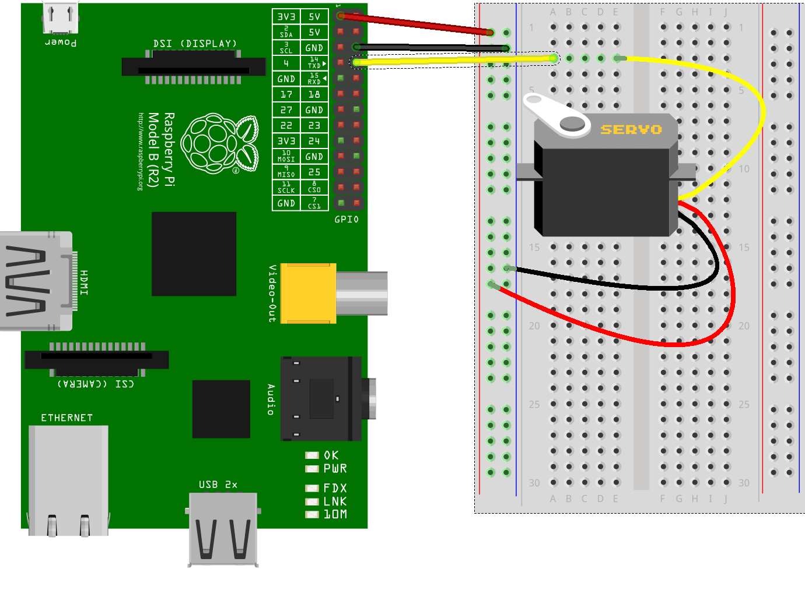</img>


								
				</script>
			</section>

			<section data-markdown section data-separator="^\n---\n$" data-separator-vertical="^\n--\n$" data-element-attributes="{_\s*?([^}]+?)}" data-separator-notes="^note:">
				<script type="text/template">
				<p class="bla">REST & co </p>
				
				# REST & co
				
				note: $nicht vollständig

								
				</script>
			</section>

			<!-- ###################### Wichtig, Damit Code Farbig, Drinn lassen!-->
			<section><pre><code></code></pre></section>
			<!-- ############################################################################################################################# -->
		</div>
		<div class="slide-footer">
			<div class="slide-footer-logo">
				</img>
			</div>
			<div class="slide-footer-logo2">
				</img>
			</div>
			<div class="slide-footer-content">
				Philipp Dockhorn
			</div>
		</div>
	</div>

	<script src="lib/js/head.min.js"></script>
	<script src="js/reveal.js"></script>
	<script>

	var mystyle = "dark";
	function togglestyle(){
		var mystyles={
			dark:{
				css:"red_dark.css",
				logo:"hftl_icon3.png"
			},
			light:{
				css:"red_light.css",
				logo:"hftl_icon.png"
			}
		}
		mystyle = mystyle == "dark" ? "light" : "dark";
		document.getElementById('theme').setAttribute('href','css/theme/' + mystyles[mystyle].css); 
		document.getElementById('logo').setAttribute('src','img/' + mystyles[mystyle].logo);
		document.getElementById('i2cimg').setAttribute('src','img/i2c_' + mystyle + '.svg');
		document.getElementById('gpio_pin').setAttribute('src','img/gpio_pin_' + mystyle + '.png');
		document.getElementById('servo').setAttribute('src','img/servo_' + mystyle + '.png');
		document.getElementById('npn').setAttribute('src','img/npnvspnp_' + mystyle + '.png');
		document.getElementById('pullup').setAttribute('src','img/pullup_' + mystyle + '.png');
		document.getElementById('pulldown').setAttribute('src','img/pulldown_' + mystyle + '.png');
		document.getElementById('offen').setAttribute('src','img/offen_' + mystyle + '.png');
		document.getElementById('transistorout').setAttribute('src','img/transistorout_' + mystyle + '.png');
		return;
	}


	function secondimg(id,img){
		document.getElementById(id).setAttribute('src',img);
	}
	var zi=2;
	function changehbridge(id){
		zi = (zi>=6||zi<=1) ? 2 : zi+1;
		document.getElementById(id).setAttribute('src','img/h-bridge_'+zi+'.gif');
		return;
	}

	var zj=0;
	function changemesh(id){
		zj = (zj>=3||zj<=0) ? 1 : zj+1;
		document.getElementById(id).setAttribute('src','img/mesh'+zj+'.svg');
		return;
	}
	
	// Full list of configuration options available at:
	// https://github.com/hakimel/reveal.js#configuration
	Reveal.initialize({

		// The "normal" size of the presentation, aspect ratio will be preserved
	    // when the presentation is scaled to fit different resolutions. Can be
	    // specified using percentage units.
	    // width: 1280,
	    // height: 720,
	    // width: 1920,
	    // height: 1080,
	    // width: 1920,
	    // height: 1080,

	    // Factor of the display size that should remain empty around the content
	    //margin: 0.2,

	    // Bounds for smallest/largest possible scale to apply to content
	    // minScale: 0.3,
	    // maxScale: 1.5,


	    controls: true,
	    progress: true,
	    history: true,
	    center: false,
	    slideNumber: true,
	    hideAddressBar: true,

		transition: 'convex', // none/fade/slide/convex/concave/zoom
		backgroundTransition: 'convex',
		
		multiplex: {
	        // Example values. To generate your own, see the socket.io server instructions.
	        secret: '14309164707776388001', // Obtained from the socket.io server. Gives this (the master) control of the presentation
	        id: '2a8d56656c27ca92', // Obtained from socket.io server
	        url: '192.168.1.116:1948' // Location of socket.io server
	    },


		// Optional reveal.js plugins
		dependencies: [
		
		{ src: '//cdnjs.cloudflare.com/ajax/libs/socket.io/0.9.16/socket.io.min.js', async: true },
		{ src: 'plugin/multiplex/master.js', async: true },

		
		//{ src: 'socket.io/socket.io.js', async: true },
		
		
		{ src: 'lib/js/classList.js', condition: function() { return !document.body.classList; } },
		{ src: 'plugin/markdown/marked.js', condition: function() { return !!document.querySelector( '[data-markdown]' ); } },
		{ src: 'plugin/markdown/markdown.js', condition: function() { return !!document.querySelector( '[data-markdown]' ); } },
		{ src: 'plugin/highlight/highlight.js', async: true, condition: function() { return !!document.querySelector( 'pre code' ); }, callback: function() { hljs.initHighlightingOnLoad(); } },
		{ src: 'plugin/zoom-js/zoom.js', async: true },
		{ src: 'plugin/notes/notes.js', async: true }
		]
	});


</script>

</body>
</html>
